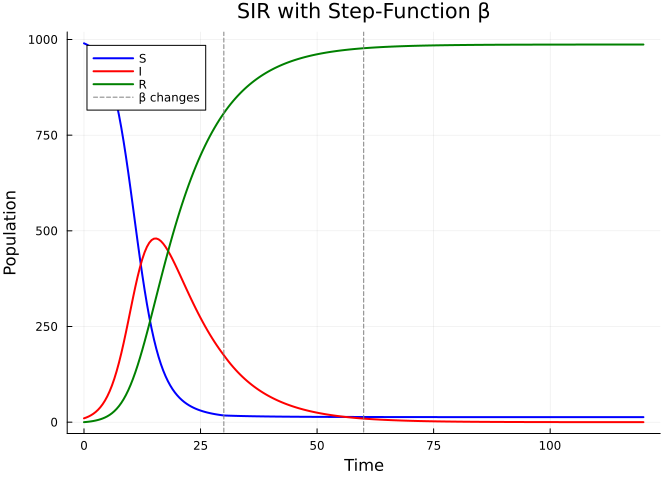
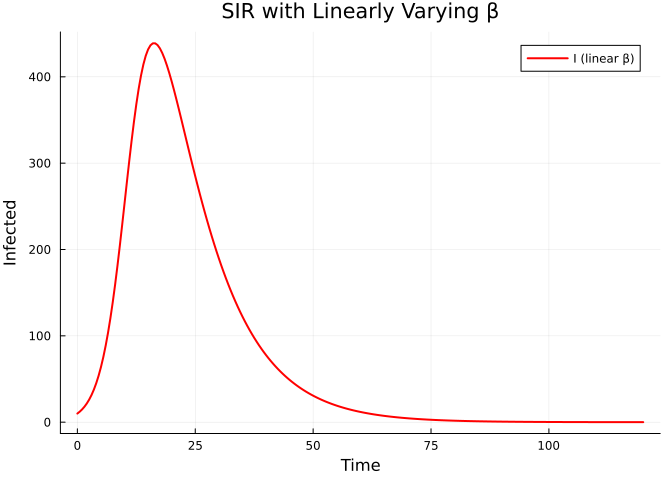
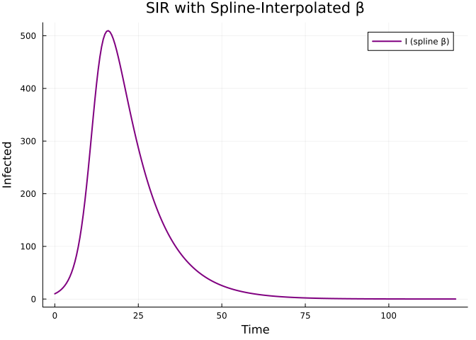
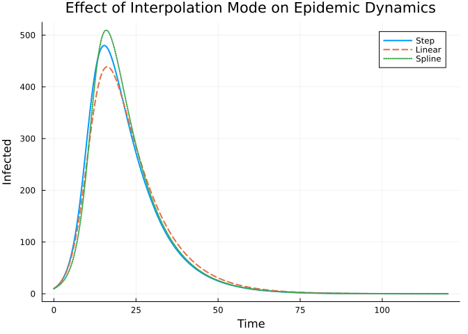
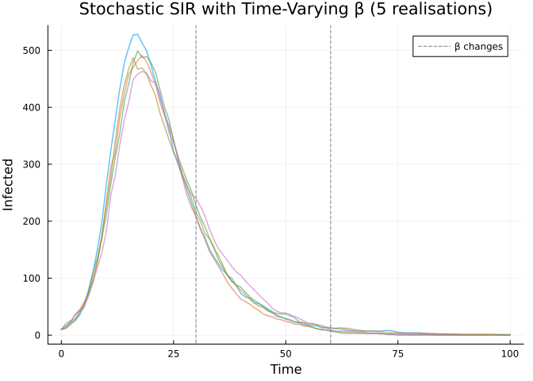

Time-Varying Parameters
Introduction
Many epidemic models require time-varying parameters — for example, a transmission rate that changes due to interventions or seasonality. Odin.jl supports this via the interpolate() function in the DSL.
using Odin
using PlotsConstant Interpolation (Step Function)
A common pattern: β drops when an intervention is implemented.
sir_step = @odin begin
deriv(S) = -beta * S * I / N
deriv(I) = beta * S * I / N - gamma * I
deriv(R) = gamma * I
initial(S) = N - I0
initial(I) = I0
initial(R) = 0
beta = interpolate(beta_time, beta_value, :constant)
beta_time = parameter(rank=1)
beta_value = parameter(rank=1)
gamma = parameter(0.1)
I0 = parameter(10)
N = parameter(1000)
end
pars = (
beta_time = [0.0, 30.0, 60.0],
beta_value = [0.5, 0.15, 0.3],
gamma = 0.1, I0 = 10.0, N = 1000.0,
)
sys = System(sir_step, pars; dt = 1.0)
reset!(sys)
times = collect(0.0:0.5:120.0)
result = simulate(sys, times)
plot(times, result[1, 1, :], label="S", lw=2, color=:blue)
plot!(times, result[2, 1, :], label="I", lw=2, color=:red)
plot!(times, result[3, 1, :], label="R", lw=2, color=:green)
vline!([30.0, 60.0], ls=:dash, color=:gray, label="β changes")
xlabel!("Time")
ylabel!("Population")
title!("SIR with Step-Function β")
Linear Interpolation
A smoother transition — β decreases linearly as awareness grows.
sir_linear = @odin begin
deriv(S) = -beta * S * I / N
deriv(I) = beta * S * I / N - gamma * I
deriv(R) = gamma * I
initial(S) = N - I0
initial(I) = I0
initial(R) = 0
beta = interpolate(beta_time, beta_value, :linear)
beta_time = parameter(rank=1)
beta_value = parameter(rank=1)
gamma = parameter(0.1)
I0 = parameter(10)
N = parameter(1000)
end
pars_linear = (
beta_time = [0.0, 40.0, 80.0, 120.0],
beta_value = [0.5, 0.3, 0.1, 0.2],
gamma = 0.1, I0 = 10.0, N = 1000.0,
)
sys_l = System(sir_linear, pars_linear; dt = 1.0)
reset!(sys_l)
result_l = simulate(sys_l, times)
plot(times, result_l[2, 1, :], label="I (linear β)", lw=2, color=:red)
xlabel!("Time")
ylabel!("Infected")
title!("SIR with Linearly Varying β")
Spline Interpolation
For smoothly varying seasonal forcing:
sir_spline = @odin begin
deriv(S) = -beta * S * I / N
deriv(I) = beta * S * I / N - gamma * I
deriv(R) = gamma * I
initial(S) = N - I0
initial(I) = I0
initial(R) = 0
beta = interpolate(beta_time, beta_value, :spline)
beta_time = parameter(rank=1)
beta_value = parameter(rank=1)
gamma = parameter(0.1)
I0 = parameter(10)
N = parameter(1000)
end
pars_spline = (
beta_time = collect(0.0:30.0:120.0),
beta_value = [0.4, 0.6, 0.2, 0.5, 0.3],
gamma = 0.1, I0 = 10.0, N = 1000.0,
)
sys_s = System(sir_spline, pars_spline; dt = 1.0)
reset!(sys_s)
result_s = simulate(sys_s, times)
plot(times, result_s[2, 1, :], label="I (spline β)", lw=2, color=:purple)
xlabel!("Time")
ylabel!("Infected")
title!("SIR with Spline-Interpolated β")
Comparing All Three
plot(times, result[2, 1, :], label="Step", lw=2, ls=:solid)
plot!(times, result_l[2, 1, :], label="Linear", lw=2, ls=:dash)
plot!(times, result_s[2, 1, :], label="Spline", lw=2, ls=:dot)
xlabel!("Time")
ylabel!("Infected")
title!("Effect of Interpolation Mode on Epidemic Dynamics")
Stochastic Model with Time-Varying β
Interpolation also works with discrete-time stochastic models:
sir_stoch = @odin begin
update(S) = S - n_SI
update(I) = I + n_SI - n_IR
update(R) = R + n_IR
initial(S) = N - I0
initial(I) = I0
initial(R) = 0
beta = interpolate(beta_time, beta_value, :constant)
p_SI = 1 - exp(-beta * I / N * dt)
p_IR = 1 - exp(-gamma * dt)
n_SI = Binomial(S, p_SI)
n_IR = Binomial(I, p_IR)
beta_time = parameter(rank=1)
beta_value = parameter(rank=1)
gamma = parameter(0.1)
I0 = parameter(10)
N = parameter(1000)
end
pars_stoch = (
beta_time = [0.0, 30.0, 60.0],
beta_value = [0.5, 0.1, 0.4],
gamma = 0.1, I0 = 10.0, N = 1000.0,
)
p = plot(xlabel="Time", ylabel="Infected",
title="Stochastic SIR with Time-Varying β (5 realisations)")
for seed in 1:5
sys_st = System(sir_stoch, pars_stoch; dt=1.0, seed=seed)
reset!(sys_st)
r = simulate(sys_st, collect(0.0:1.0:100.0))
plot!(p, 0.0:1.0:100.0, r[2, 1, :], alpha=0.6, lw=1.5, label=nothing)
end
vline!(p, [30.0, 60.0], ls=:dash, color=:gray, label="β changes")
p
Summary
| Mode | Syntax | Behaviour |
|---|---|---|
| Constant | interpolate(t, v, :constant) | Step function (piecewise constant) |
| Linear | interpolate(t, v, :linear) | Piecewise linear |
| Spline | interpolate(t, v, :spline) | Cubic spline (smooth) |
Interpolation works with both ODE and discrete-time models, and is compatible with particle filters and MCMC inference.